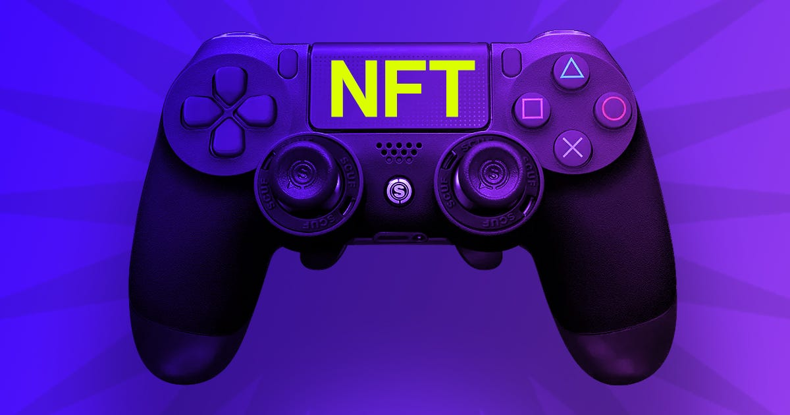
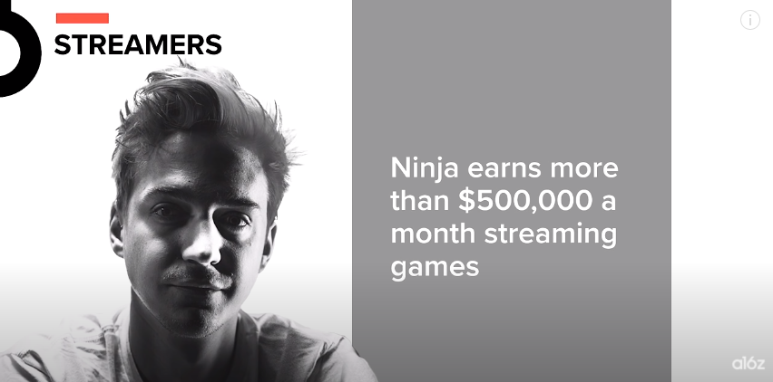
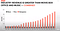

The opportunities of NFTzation of Games
The investor-gamers era enabled by blockchain technologies


In the past, there were three opportunities for making revenues in the game industry. These three revenue streams are making and selling gameplays and assets, becoming an e-sport professional, or streaming games on platforms like twitch

Blockchain will help tackle three problems that will ease the creation of a decentralized gaming market. These three problems are proof of ownership of assets, traceability of transfers of ownership of assets, and real-world economic valuation of assets. This decentralized gaming market that we have seen emerging from games like world of warcraft where players started implementing themselves means for transacting assets and account will be made more systemic and secure by the blockchain infrastructure that will become more and more mature and energy-efficient.
Blockchain is opening a new chapter in gaming and with blockchain technology, Game developers and Gamers are Entering a New Era of Monetization that is about to bring new streams of revenues other than the three streams above that used to be available and will make the game industry a more and more big industry than it is actually.

Game studios and developers now have to make their hands dirty on blockchain things by acquiring the knowledge that will help them upgrade their successful past chipped games with an NFT system or designing and building brand new gameplays that leverage the power of Blockchain and Decentralized Autonomous Organizations (DAO). Play to Earn seems to be this next trend for the game industry and like how it almost always happens when a trend reversal happens in an industry skills, status and roles are redistributed giving each actor of this industry the opportunity to make a career shift of a business model pivot.
The opportunity for you who is interested in the game industry is that you can be this specialist of this early trend of using blockchain in games by understanding all the layers of this technology and ideating to come up with several creative ideas about how blockchain could make gaming experiences more fun and even financially profitable as blockchain is often first associated with fintech.
for example, City-building games like Simcity are games that simulate an economic system by allowing gamers to build and own a whole environment with the advent of NFT these types of games could be tied with an NFT system that will bring a currency to the emulated economic system and allow players to make transactions of asset that could even be turned into a profitable business but if we remind our self about past gaming experience we could see that second life first tried this experience of connecting a game economy with the real economy and we have seen players making millions of dollar by selling properties in Second life. This will happen more into the next NFTzed game economy. A gaming Economy that will emulate most of the successful startups of the web era like eBay, Etsy, TaskRabbit, and others.
If you are working on a game project right now it is time to stop and think about how to profit from this NFT trend that will very likely be a persistent trend and habit from the player's perspective. From the 2.4 Billion gamers in the world, many will adopt this play to earn model drip by drip until this gaming model becomes the most important model. Game studios. Marketplaces like steam, Console builders like sony and Microsoft will all naturally integrate this new play-to-earn model in their products and services then making your game NFT ready will give you more opportunities to succeed as an indie game developer or studio.
Blockchain with NFT will bring huge opportunities for game developers and players, I hope that you will benefit from this new era of Blockchained Games.
Thank you for reading.
PS: Godda Games pivoted and changed its name to …NFT….